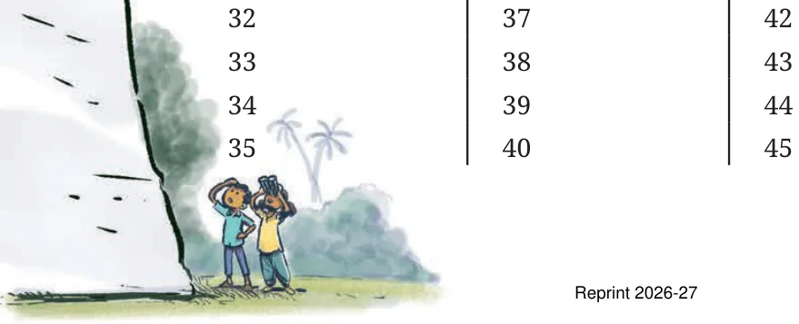
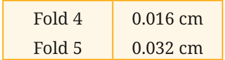
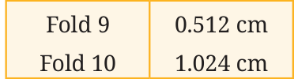
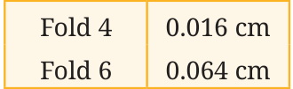
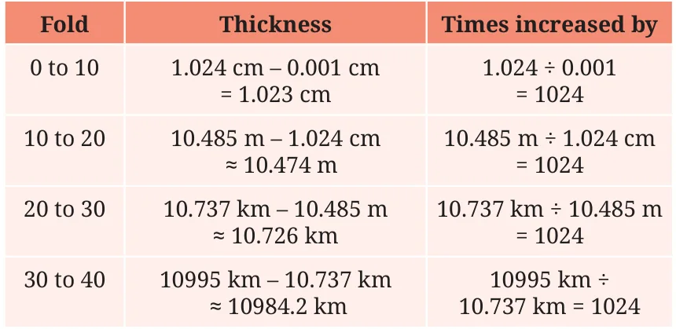

An Impossible Venture!
Take a sheet of paper, as large a sheet as you can find. Fold it once. Fold it again, and again.
How many times can you fold it over and over? Estu says “I heard that a sheet of paper can’t be folded more than 7 times”. Roxie replies “What if we use a thinner paper, like a newspaper or a tissue paper?” Try it with different types of paper and see what happens.
What! That’s crazy! If you can fold a paper Just 46 times!? You 46 times, it will be so thick that it can reach the Moon! must have ignored several zeros after 46. Well, why don’t you find out yourselves.
Say you can fold a sheet of paper as many times as you wish. What would its thickness be after 30 folds? Make a guess. Let us find out how thick a sheet of paper will be after 46 folds. Assume that the thickness of the sheet is 0.001 cm.
thickness doubles after each fold.
Fold Thickness Fold Thickness Fold Thickness
1 0.002 cm 7 0.128 cm 13 8.192 cm 2 0.004 cm 8 0.256 cm 14 16.384 cm 3 0.008 cm 9 0.512 cm 15 32.768 cm 4 0.016 cm 10 1.024 cm 16 65.536 cm 5 0.032 cm 11 2.048 cm \(17 \approx 131\) cm 6 0.064 cm 12 4.096 cm (We use the sign ‘ \(\approx\) ’ to indicate ‘approximately equal to’.) After 10 folds, the thickness is just above 1 cm (1.024 cm). After 17 folds, the thickness is about 131 cm (a little more than 4 feet). Now, what do you think the thickness would be after 30 folds? 45 folds? Make a guess.
Fill the table below.
Fold Thickness Fold Thickness Fold Thickness
\(18 \approx 262\) cm \(21 24 19 \approx 524\) cm \(22 25 20 \approx 10.4 m 23 26\) After 26 folds, the thickness is approximately 670 m. Burj Khalifa in Dubai, the tallest building in the world, is 830 m tall.
Fold Thickness Fold Thickness
\(27 \approx 1.3\) km 29 28 30 After 30 folds, the thickness of the paper is about 10.7 km, the typical height at which planes fly. The deepest point discovered in the oceans is the Mariana Trench, with a depth of 11 km.
Fold Thickness Fold Thickness Fold Thickness


It might be hard to digest the fact that after just 46 folds, the thickness is more than 7,00,000 km. This is the power of multiplicative growth, also called exponential growth. Let us analyse the growth. We have seen that the thickness doubles after every fold.


Notice the change in thickness after two folds. By how much does it increase? After any 3 folds, the thickness increases 8 times \((= 2 \times 2 \times 2)\). Check if that is true. Similarly, from any point, the thickness after 10 folds increases by 1024 times \((= 2\) multiplied by itself 10 times), as shown in the table below.

